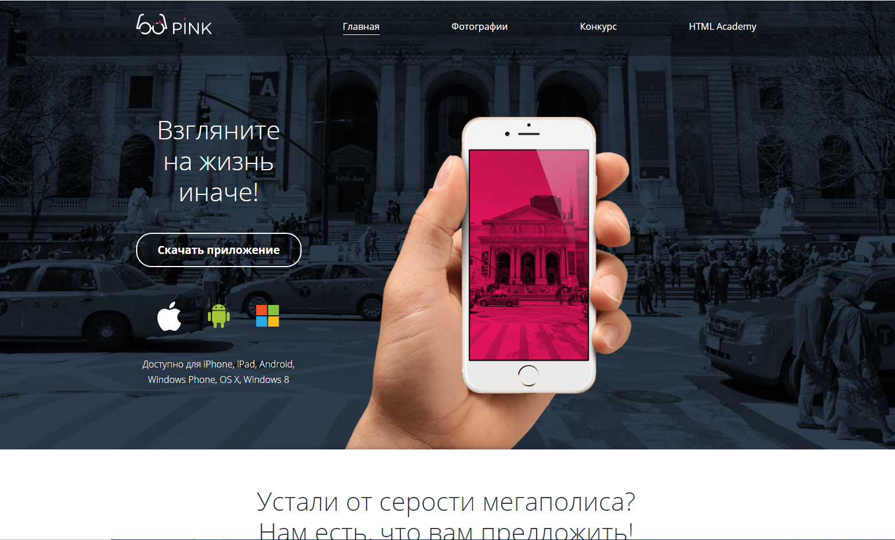

HTML + CSS + JS
Домашний проект сайта мобильного приложения Pink. Проект выполнен по тренировочному макету HTML Academy.
В рамках этого проекта я использовал сборщик проектов Gulp и препроцессор Sass. Сайт состоит из трех страниц: Главная, Фотографии, Конкурс(со страницей отправки формы). На главной страницы использованы два слайдера: первый позволяет пролистывать комментарии, второй перемещает таблицу с тарифами на мобильном разрешении. Все три страницы выполнены в трех разрешениях: для мобильного устройства, планшета и широкого монитора. Помимо отработки навыков работы с HTML и CSS этот проект позволил решить базовые задачи, используя JS
Проект оказался крайне полезным для изучения основ верстки сайтов. В ходе работы над были отработаны навыки HTML и CSS с использованием flexbox и grid.